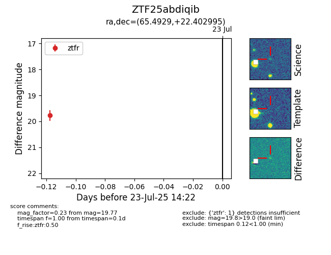

Target ZTF25abdiqib at 2025-07-23 14:22, see:
FINK: fink-portal.org/ZTF25abdiqib
Lasair: lasair-ztf.lsst.ac.uk/objects/ZTF25abdiqib
ALeRCE: alerce.online/object/ZTF25abdiqib
alt names
ZTF25abdiqib (ztf,fink)
coordinates:
equatorial (ra, dec) = (65.4929,+22.40300)
galactic (l, b) = (173.9305,-19.00155)
photometry
last ztfr=19.77
1 ztfr detections
